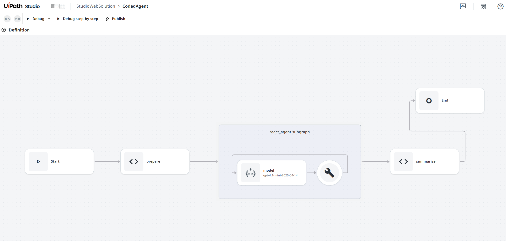
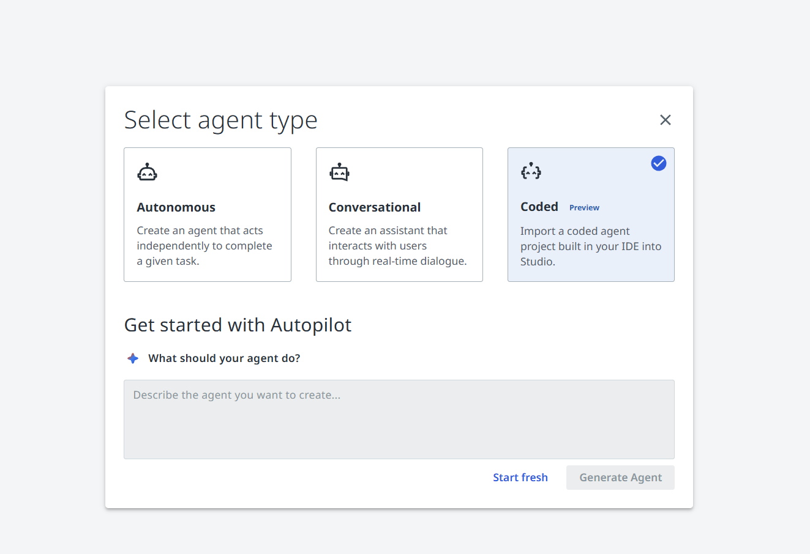
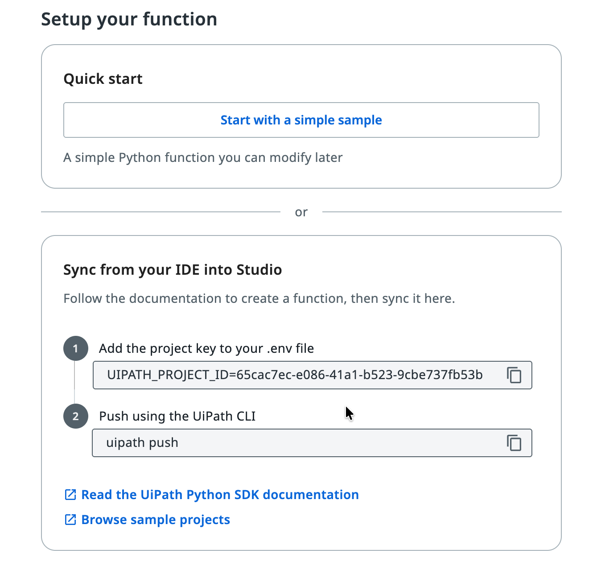
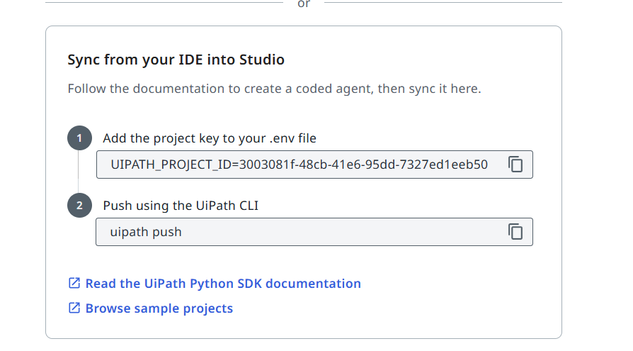

Studio Web Integration¶
Studio Web is a cloud IDE for building projects such as RPAs, low code agents, and API workflows. It also supports importing coded agents and coded functions built locally. Bringing your project into Studio Web gives you:
- Cloud debugging with dynamic breakpoints
- Running and defining evaluations directly in the cloud (coded agents only)
- A unified build experience alongside multiple project types
- Self contained solution deployment units
Preview Feature
Coded function support is in preview and is subject to changes.

There are two ways to connect your project to Studio Web: using a Cloud Workspace or a Local Workspace.
Cloud Workspace¶
In a Cloud Workspace, your project lives in Studio Web and you sync code between your local IDE and the cloud.
Importing a Coded Agent or Coded Function¶
- Open your solution in Studio Web
-
Create the project:
Create a new Agent and select Coded:

Use the Initial setup screen to get started:

-
Choose a sample project to start from, or push an existing local project
Pushing an Existing Project¶
If you already have a project locally, you can sync it to Studio Web:
- Copy the
UIPATH_PROJECT_IDfrom Studio Web into your.envfile

-
Push your project:
uipath pushPushing UiPath project to Studio Web...
Uploading 'main.py'
Uploading 'uipath.json'
Updating 'pyproject.toml'
Uploading '.uipath/studio_metadata.json'
Importing referenced resources to Studio Web project...
🔵 Resource import summary: 3 total resources - 1 created, 1 updated, 1 unchanged, 0 not foundNotice the Resource import summary at the end. The push command also imports resources defined in
bindings.jsoninto the Studio Web solution, just like importing resources for a low code agent. This ensures that all required resources are packaged with the solution, so the project works anywhere the solution is deployed.See
uipath pushin the CLI Reference.
Pulling Changes¶
To pull the latest version from Studio Web to your local environment:
Processing: main.py
File 'main.py' is up to date
Processing: uipath.json
File 'uipath.json' is up to date
Processing: bindings.json
File 'bindings.json' is up to date
Processing: evaluations\eval-sets\evaluation-set-default.json
Downloaded 'evaluations\eval-sets\evaluation-set-default.json'
Processing: evaluations\evaluators\evaluator-default.json
Downloaded 'evaluations\evaluators\evaluator-default.json'
✓ Project pulled successfully
See uipath pull in the CLI Reference.
Local Workspace¶
Preview Feature
The local workspace integration is currently experimental. Behavior is subject to change in future versions.
In a Local Workspace, your project lives on your machine and is linked to a Studio Web solution. See the Local Workspace documentation for setup details.
You can either start from a predefined template in Studio Web or set up a new project from scratch.
Starting from a Template¶
When creating a new coded agent or coded function in Studio Web with a Local Workspace, you can pick one of the predefined templates. This creates the project files directly on your machine. Templates come with sample code and predefined evaluations you can run immediately.
Setting Up a New Project¶
You can also create a project from scratch in your local IDE and have it appear in Studio Web.
Coded Agent¶
First, install the SDK package for the framework you want to use:
Installed 42 packages in 0.8s
Then authenticate, scaffold the agent, and initialize the project:
🔗 If a browser window did not open, please open the following URL in your browser: [LINK]
👇 Select tenant:
0: Tenant1
1: Tenant2
Select tenant number: 0
Selected tenant: Tenant1
✓ Authentication successful.
uipath new agent✓ Created new agent project.
uipath init⠋ Initializing UiPath project ...
✓ Created 'entry-points.json' file.
That's it, your agent should now be visible in Studio Web.
Coded Function¶
A coded function doesn't require an additional framework package. Authenticate, scaffold the project, and initialize it:
🔗 If a browser window did not open, please open the following URL in your browser: [LINK]
👇 Select tenant:
0: Tenant1
1: Tenant2
Select tenant number: 0
Selected tenant: Tenant1
✓ Authentication successful.
uipath new my-function✓ Created 'main.py' file.
✓ Created 'pyproject.toml' file.
✓ Created 'uipath.json' file.
uipath init⠋ Initializing UiPath project ...
✓ Created 'entry-points.json' file.
That's it, your coded function should now be visible in Studio Web.
Publishing¶
Once your project is in Studio Web, publishing works the same as any other project. Click Publish in Studio Web and it will be packaged and deployed through the standard workflow.
Running and Debugging¶
Your project can be run both in the cloud (via Studio Web) and locally using the CLI.
The CLI commands below take the entrypoint name as the first argument. For a coded agent, this is the graph name declared in your framework's config (for example, agent in langgraph.json). For a coded function, this is the key declared in the functions map of uipath.json (for example, main).
Running Locally¶
See uipath run in the CLI Reference.
Debugging Locally¶
Use uipath debug for an enhanced local debugging experience. Unlike uipath run, the debug command:
- Auto polls for trigger responses when the project suspends (e.g., LangGraph interrupts)
- Fetches binding overwrites from Studio Web (configurable in Debug > Debug Configuration > Solution resources)
See uipath debug in the CLI Reference.
Evaluating Locally¶
Run evaluations against your project using the CLI:
See uipath eval in the CLI Reference and the Evaluations documentation.
Syncing Evaluations¶
Evaluations can be defined either in Studio Web or locally, and sync automatically when you use uipath pull and uipath push. Defining and running evaluations in Studio Web is supported for coded agents only; coded functions can still be evaluated locally with uipath eval.
Note
Custom evaluators must be created locally. See Custom Evaluators for details.